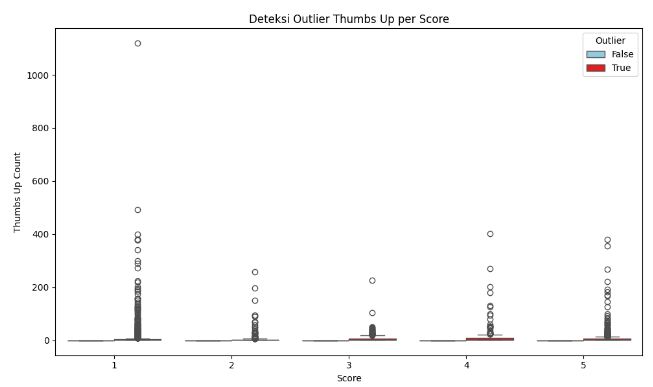
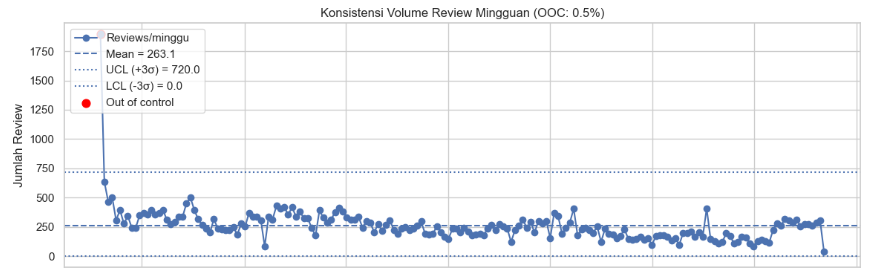
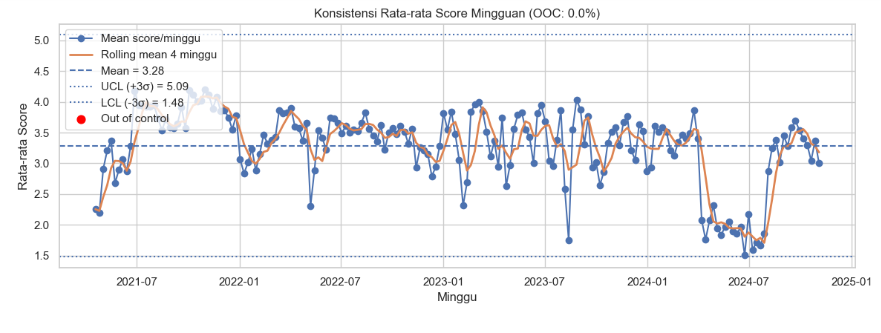
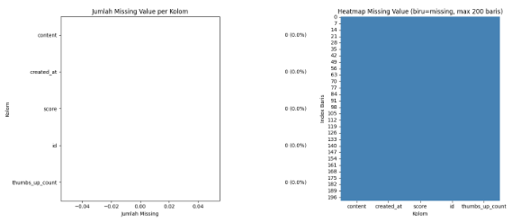

# 1) Import
import pandas as pd
import psycopg2
# 2) Koneksi ke PostgreSQL (server 'psd' di pgAdmin adalah nama alias; host tetap localhost jika di mesin yang sama)
try:
conn = psycopg2.connect(
host="localhost", # atau IP servermu
database="postgres",
user="postgres", # ganti jika berbeda
password="user", # ganti
port="5432"
)
# 3) Query ambil data dari tabel digitalkorlantas
sql_query = """
SELECT
id,
created_at,
score,
content,
"thumbsUpCount" AS thumbs_up_count
FROM public.digitalkorlantas
"""
# 4) Eksekusi & muat ke DataFrame (Power BI membaca variabel 'dataset')
dataset = pd.read_sql_query(sql_query, conn)
# Opsional: pastikan kolom waktu jadi datetime
if "created_at" in dataset.columns:
dataset["created_at"] = pd.to_datetime(dataset["created_at"], errors="coerce")
except Exception as e:
print(f"Error: {e}")
finally:
if 'conn' in locals():
conn.close()
# Power BI akan otomatis mendeteksi DataFrame bernama 'dataset'
---------------------------------------------------------------------------
ModuleNotFoundError Traceback (most recent call last)
Cell In[1], line 3
1 # 1) Import
2 import pandas as pd
----> 3 import psycopg2
5 # 2) Koneksi ke PostgreSQL (server 'psd' di pgAdmin adalah nama alias; host tetap localhost jika di mesin yang sama)
6 try:
ModuleNotFoundError: No module named 'psycopg2'
Eksplorasi Data#
2.1 Tipe Data#
Dataset digitalkorlantas dibangun dari berkas CSV ke tabel digitalkorlantas di PostgreSQL. Atribut diklasifikasikan sebagai berikut :
id = Numerik (Identifier)
Berupa bilangan bulat, biasanya dipakai sebagai kunci unik.created_at = Temporal
Berisi tanggal/waktu (meskipun sekarang masih tersimpan sebagai string).score = Numerik (Diskrit)
Nilai bilangan bulat (misalnya rating/skor).content = Teks / Kategorikal bebas
Berupa kalimat/ulasan, termasuk data tidak terstruktur (teks).thumbsUpCount = Numerik (Diskrit)
Hitungan jumlah likes/thumbs up dalam bilangan bulat.
2.2 Kualitas Data#
2.2.1 Outlier Analysis (Metode IQR)#
import pandas as pd
import matplotlib.pyplot as plt
import seaborn as sns
# Power BI menyediakan DataFrame bernama 'dataset' dari field yang kamu seret
# Pastikan tipe
dataset["thumbs_up_count"] = pd.to_numeric(dataset["thumbs_up_count"], errors="coerce")
dataset["score"] = pd.to_numeric(dataset["score"], errors="coerce")
# Buang baris kosong pada kolom yang dipakai
dataset = dataset.dropna(subset=["thumbs_up_count", "score"])
# ====== OUTLIER DETECTION (IQR per 'score') ======
q1 = dataset.groupby("score")["thumbs_up_count"].transform(lambda s: s.quantile(0.25))
q3 = dataset.groupby("score")["thumbs_up_count"].transform(lambda s: s.quantile(0.75))
iqr = q3 - q1
lower = q1 - 1.5 * iqr
upper = q3 + 1.5 * iqr
dataset["Outlier"] = (dataset["thumbs_up_count"] < lower) | (dataset["thumbs_up_count"] > upper)
# ====== VISUAL ======
plt.figure(figsize=(10,6))
sns.boxplot(
data=dataset,
x="score",
y="thumbs_up_count",
hue="Outlier",
palette={False: "skyblue", True: "red"}
)
plt.title("Deteksi Outlier Thumbs Up per Score")
plt.xlabel("Score")
plt.ylabel("Thumbs Up Count")
plt.legend(title="Outlier")
plt.tight_layout()
plt.show()

2.2.2 Konsistensi Data#
import pandas as pd
import numpy as np
import matplotlib.pyplot as plt
import seaborn as sns
dataset["created_at"] = pd.to_datetime(dataset["created_at"], errors="coerce")
dataset["score"] = pd.to_numeric(dataset["score"], errors="coerce")
if "thumbs_up_count" in dataset.columns:
dataset["thumbs_up_count"] = pd.to_numeric(dataset["thumbs_up_count"], errors="coerce")
dataset = dataset.dropna(subset=["created_at", "score"])
# ====== 1) Agregasi mingguan ======
# Hitung metrik mingguan untuk menilai kestabilan
weekly = (
dataset
.set_index("created_at")
.sort_index()
.resample("W") # mingguan (akhir minggu)
.agg(
reviews=("score", "count"),
mean_score=("score", "mean"),
median_likes=("thumbs_up_count", "median") if "thumbs_up_count" in dataset.columns else ("score", "mean")
)
.reset_index()
)
# Jaga kalau data terlalu sedikit
if len(weekly) < 3:
plt.figure(figsize=(8,2))
plt.text(0.01, 0.6, "Data mingguan terlalu sedikit untuk analisis konsistensi.", fontsize=12)
plt.axis("off")
plt.show()
else:
# ====== 2) Hitung control limits (mean ± 3σ) ======
# Untuk jumlah review/minggu
r_mean = weekly["reviews"].mean()
r_std = weekly["reviews"].std(ddof=1)
r_ucl, r_lcl = r_mean + 3*r_std, max(0, r_mean - 3*r_std)
# Untuk rata-rata score/minggu
s_mean = weekly["mean_score"].mean()
s_std = weekly["mean_score"].std(ddof=1)
s_ucl, s_lcl = s_mean + 3*s_std, s_mean - 3*s_std
# Rolling mean (untuk melihat tren halus)
weekly["score_roll_mean_4w"] = weekly["mean_score"].rolling(4, min_periods=1).mean()
# Titik out of control (di luar UCL/LCL)
weekly["reviews_flag"] = (weekly["reviews"] > r_ucl) | (weekly["reviews"] < r_lcl)
weekly["score_flag"] = (weekly["mean_score"] > s_ucl) | (weekly["mean_score"] < s_lcl)
pct_reviews_ooc = 100 * weekly["reviews_flag"].mean()
pct_score_ooc = 100 * weekly["score_flag"].mean()
# ====== 3) Plot: Control Chart ======
sns.set(style="whitegrid")
fig, axes = plt.subplots(2, 1, figsize=(12, 8), sharex=True)
# --- Panel 1: Jumlah review per minggu ---
ax = axes[0]
ax.plot(weekly["created_at"], weekly["reviews"], marker="o", linewidth=1.5, label="Reviews/minggu")
ax.axhline(r_mean, linestyle="--", label=f"Mean = {r_mean:.1f}")
ax.axhline(r_ucl, linestyle=":", label=f"UCL (+3σ) = {r_ucl:.1f}")
ax.axhline(r_lcl, linestyle=":", label=f"LCL (-3σ) = {r_lcl:.1f}")
# Sorot titik out of control
ooc_r = weekly[weekly["reviews_flag"]]
ax.scatter(ooc_r["created_at"], ooc_r["reviews"], s=60, color="red", label="Out of control")
ax.set_title(f"Konsistensi Volume Review Mingguan (OOC: {pct_reviews_ooc:.1f}%)")
ax.set_ylabel("Jumlah Review")
ax.legend(loc="upper left")
# --- Panel 2: Rata-rata score per minggu ---
ax2 = axes[1]
ax2.plot(weekly["created_at"], weekly["mean_score"], marker="o", linewidth=1.5, label="Mean score/minggu")
ax2.plot(weekly["created_at"], weekly["score_roll_mean_4w"], linewidth=2, label="Rolling mean 4 minggu")
ax2.axhline(s_mean, linestyle="--", label=f"Mean = {s_mean:.2f}")
ax2.axhline(s_ucl, linestyle=":", label=f"UCL (+3σ) = {s_ucl:.2f}")
ax2.axhline(s_lcl, linestyle=":", label=f"LCL (-3σ) = {s_lcl:.2f}")
ooc_s = weekly[weekly["score_flag"]]
ax2.scatter(ooc_s["created_at"], ooc_s["mean_score"], s=60, color="red", label="Out of control")
ax2.set_title(f"Konsistensi Rata-rata Score Mingguan (OOC: {pct_score_ooc:.1f}%)")
ax2.set_ylabel("Rata-rata Score")
ax2.set_xlabel("Minggu")
ax2.legend(loc="upper left")
plt.tight_layout()
plt.show()
 
2.2.3 Missing Values#
import pandas as pd
import matplotlib.pyplot as plt
import seaborn as sns
# Copy dataset
df = dataset.copy()
# ====== Summary Missing ======
missing_count = df.isnull().sum()
missing_pct = (missing_count / len(df)) * 100
missing_df = pd.DataFrame({
"Kolom": missing_count.index,
"Jumlah Missing": missing_count.values,
"Persentase (%)": missing_pct.values
}).sort_values("Jumlah Missing", ascending=False)
# ====== Ambil sample untuk heatmap ======
max_rows = 200
df_sample = df.head(max_rows)
missing_matrix = df_sample.isnull()
# ====== Plot 2 panel: bar chart + heatmap ======
fig, axes = plt.subplots(1, 2, figsize=(14,6))
# --- Panel 1: Bar chart summary ---
sns.barplot(data=missing_df, x="Jumlah Missing", y="Kolom", palette="Blues_r", ax=axes[0])
for i, v in enumerate(missing_df["Jumlah Missing"]):
axes[0].text(v + 0.1, i, f"{v} ({missing_df.iloc[i,2]:.1f}%)", va='center')
axes[0].set_title("Jumlah Missing Value per Kolom")
axes[0].set_xlabel("Jumlah Missing")
axes[0].set_ylabel("Kolom")
# --- Panel 2: Heatmap record-level ---
sns.heatmap(
missing_matrix,
cmap=["steelblue", "lightgrey"], # biru=missing, abu=ada data
cbar=False,
ax=axes[1]
)
axes[1].set_title(f"Heatmap Missing Value (biru=missing, max {max_rows} baris)")
axes[1].set_xlabel("Kolom")
axes[1].set_ylabel("Index Baris")
plt.tight_layout()
plt.show()
